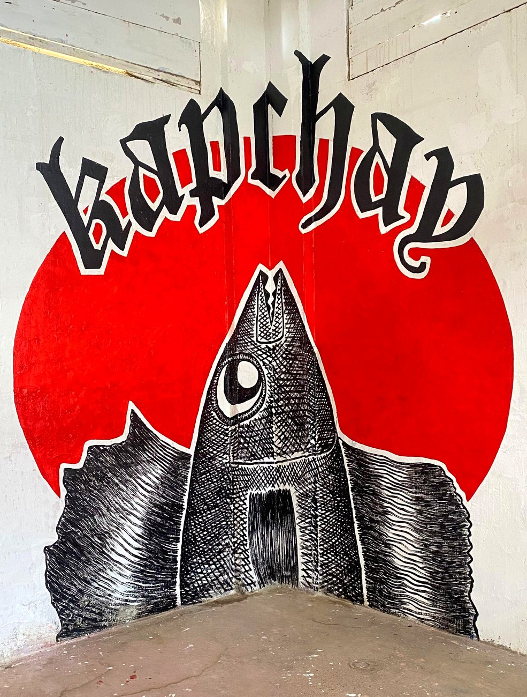
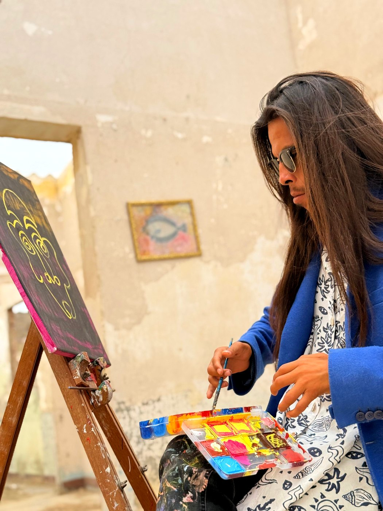
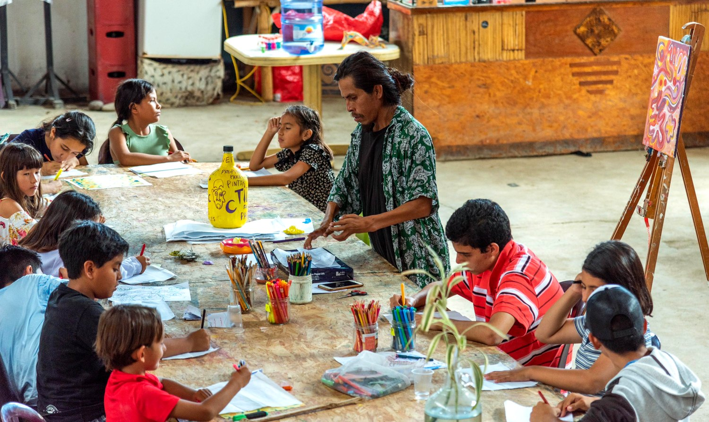
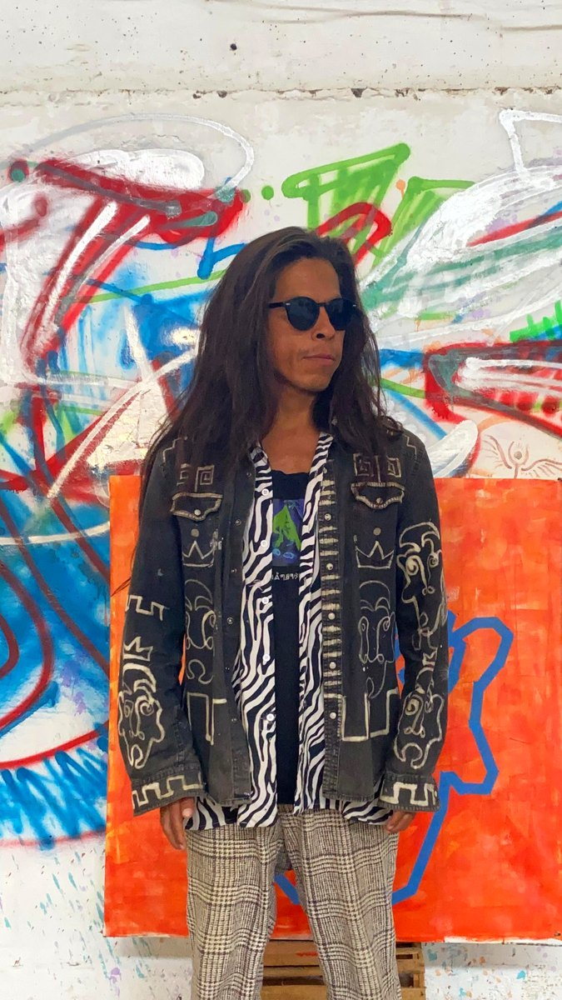

Creative space · Lobitos, Peru
A creative space on the north coast of Peru — home to artist residencies and free art programs for the community.
The space
Kapchan is a large creative space in Lobitos, a surf town on the desert coast of Piura, in northern Peru. Once an empty warehouse, it is now a living studio — white brick walls, open light, murals on every surface — where people come to make, live and learn together.
It is the home and workshop of the artist Inti, and an open door for visiting artists and local children alike. Here, art is something shared.


Artists in residence
Visiting artists are welcome to live and work in the space alongside Inti. Residents get room to make, access to the studio and its materials, and the slow rhythm of Lobitos — the surf, the desert light, and the community around the space.

For the community
Kapchan opens its doors to local schoolchildren with free, hands-on art workshops — drawing, painting and printmaking in a real artist's space.
Teachers, schools and community groups are welcome to arrange a visit or a workshop.
Bring a groupInside Kapchan
The studio, the murals, the workshops and the people who pass through. Tap any photo to enlarge.
The artist behind the space
Kapchan is the studio of the self-taught artist Inti — known across Lobitos for his fish, his faces and his tag. See his paintings, prints and hand-painted clothing on his personal website.
Visit tataintiart.com
Get in touch
Kapchan is in Lobitos, Piura. The fastest way to reach us is by message.
Lobitos · Piura · Peru